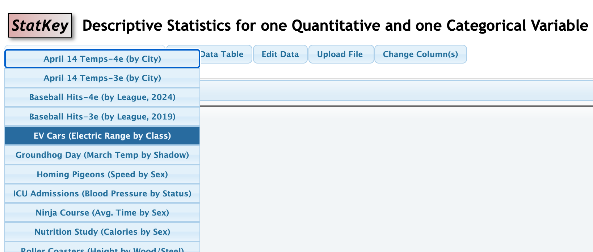

Descriptive Statistics Exercises
For Questions #1-3:
(a) identify the cases
(b) identify the variable(s)
(c) for each variable you identified determine whether the variable is categorical or quantitiative.
1) Hormones and Fish Fertility
When birth control pills are taken, some of the hormones found in the pills eventually make their way into lakes and waterways. In one study, a water sample was taken from various lakes. The data indicate that as the concentration of estrogen in the lake water goes up, the fertility level of fish in the lake goes down. The estrogen level is measured in parts per trillion (ppt) and the fertility level is recorded as the percent of eggs fertilized.
2) Do metal tags on penguins harm them?
Scientists trying to tell penguins apart have several ways to tag the birds. One method involves wrapping metal strips with ID numbers around the penguin’s flipper, while another involves electronic tags. Neither tag seems to physically harm the penguins. However, since tagged penguins are used to study all penguins, scientists wanted to determine whether the metal tags have any significant effect on the penguins. Data were collected over a 10-year time span from a sample of 100 penguins that were randomly given either metal or electronic tags. In addition to type of tag worn, researchers also collected information on number of chicks, whether they survived the decade, and length of time spent on foraging trips.
3) Don’t Text While Studying!
For the 2015 Intel Science Fair, two brothers in high school recruited 47 of their classmates to take part in a two-stage study. Participants had to read two different passages and then answer questions on them, and each person’s score was recorded for each of the two tests. There were no distractions for one of the passages, but participants received text messages while they read the other passage. Participants scored significantly worse when distracted by incoming texts. Participants were also asked if they thought they were good at multitasking (yes or no) but even students who were confident of their abilities did just as poorly on the test while texting.
For Questions #4-6:
(a) identify the cases
(b) identify the variables
(c) for each variable you identified determine which variable is explanatory and which is the response
(d) Is the study and observational study or an experiment? Justify your answer
4) Potassium Levels in Spinach
A study examining spinach leaves from a variety of different locations finds that spinach grown in soil with high amounts of iron tends to have lower levels of potassium.
5) Does Eating Organic Food Make Fruit Flies Live Longer?
For a high school science project, a 16-year-old girl randomly divided fruit flies into two groups, and fed one group organic food and the other group conventional (non-organic) food. The flies fed organic food lived an average of 3.25 days longer than the flies fed conventional food.
6) How to Debate a Science Denier
Science deniers oppose robust and valid results of scientific inquiry. A recent study investigates the most effective ways to debunk scientific misinformation. Science advocates can respond to misinformation using topic rebuttal (providing scientific facts on the subject) or technique rebuttal (explaining more generally the false techniques used by science deniers). In the study, 1773 participants first listened to a science denier and were then randomly assigned to one of four conditions: no rebuttal, topic rebuttal, technique rebuttal, or both topic and technique rebuttal. Participants’ attitudes toward the science topic were measured and recorded three times: before participation, after the science denier, and after the rebuttal. Results indicate the importance of having a rebuttal: participants on average were influenced by the science denier, but the influence was mitigated by having any rebuttal. The study further showed that topic or technique rebuttal worked equally well, and having both provided no additional benefit.
For Questions #7-9:
Go to Lock Datasets and download the files referenced in the problem .csv format according to the instructions in the video Uploading a File to Statkey (Video is posted on our Canvas Page in the Statkey Links and Support Videos module. You can also access it on You Tube
7 GPA and Night Owls vs Morning Larks
This exercise follows the video tutorial referenced above. This data is stored in SleepStudy on the Lock Dataset page. Use Statkey to find the following statistics. Review the tutorial videos on Canvas, as needed. Use the appropriate notation for each.
(a) The mean GPAs.
(b) Create side-by-side boxplots to compare the Owl group and the Lark group. report the difference of means.
(c) Compare the values in the boxplots, i.e the 5-number summary, for $Owl$ and $Lark$ to make a decision about which group as a whole seems to have a better GPA.
(d) Do you think the minimum and maximum values in the 5-number summary are as useful as the values for Q1, median, and Q3 when assessing an entire groups of data, as we did in part (c)?
8 Finger Tapping and Caffeine
The effects of caffeine on the body have been extensively studied. In one experiment, researchers examined whether caffeine increases the rate at which people are able to tap their fingers. Twenty students were randomly divided into two groups of 10 students each, with one group receiving caffeinated coffee and one group receiving decaffeinated coffee. The study was double-blind, and after a 2-hour period, each student was tested to measure finger tapping rate (taps per minute). The goal of the experiment was to determine whether caffeine produces an increase in the average tap rate. This data is stored in Caffeine Taps on the Lock Dataset page. Use Statkey to find the following statistics. Review the tutorial videos on Canvas, as needed. Use the appropriate notation for each.
(a) The mean number of Taps.
(b) Create side-by-side boxplots to compare $Taps$ between the Caffeine group and the NoCaffeine group. report the difference of means.
(c) Does the value in 7b seem to provide evidence that caffeine is reponsible for the increase in tap rate. You should state the type of study that was done to defend your answer.
9) Vegetable Consumption and Physical Activity in the US
Is there a linear relationship between the percentage of residents in a state who eat at least one serving of vegetables per day and the percentage of residents in a statewho do 150+ minutes of aerobic physical activity per week? The USStates$ dataset contains data collected on the 50 US States. Two variables in this dataset are Vegetables and PhysicalActivity*. Use Statkey to find the following statistics. Review the tutorial videos on Canvas, as needed. Use the appropriate notation for each. Treat $PhysicalActivity$ as the explantory variable.
(a) Report the the value of $r$ (the correlation coefficient).
(b) State the regression equation in the form $\hat{y}=a+bx$. (Your equation should not use $y$ and $x$, but rather the names of the variables.)
(c) Interpret the slope of the regression equation.
For Questions #10-12:
These questions will ise Stakey, but will not require us to upload data. The data will be found in the dropdown menus on the approprate Statkey screen, i.e. the screen that you will need to answer the questions (single quantitative, one categorical and one quantitative, etc)
10 EV Range by Class
A Plug-in Hybrid Electric Vehicle (PHEV) combines a gasoline engine with an electric motor and a larger battery that can be plugged in to charge. BEVs (Battery Electric Vehicles) run 100% on electricity. This data is available in the drop down menu under EV Cars (Electric Range by Class). See image below.

(a) Report the difference of means.
(b) What is the maximum range in the PHEV category?
(c) What is the minimum range in the BEV category?
11 pH and Mercury in Florida Lakes
The FloridaLakes dataset describes characteristics of water samples taken at 53 Florida lakes. Alkalinity (concentration of calcium carbonate in mg/L) and acidity (pH) are given for each lake. In addition, the average mercury level is recorded for a sample of fish (largemouth bass) from each lake. A standardized mercury level is obtained by adjusting the mercury averages to account for the age of the fish in each sample. Notice that the cases are the 53 lakes and that all variables are quantitative.
(a) Discuss the scatterplot. Does the relationship between pH and mercury concentration appear linear? How strong is the relationship between pH and mercury concentration?
(b) Report the the value of $r$ (the correlation coefficient).
(c) State the regression equation in the form $\hat{y}=a+bx$. (Your equation should not use $y$ and $x$, but rather the names of the variables.)
(d) Interpret the slope of the regression equation.
(e) Can we conlude that the lower pH values are responsible for the high mercury concentrations? Explain.
12 Speed vs Drop on Rollercoasters
We wish to see if there is linear relationship between the speed (miles/hour) of a roller coaster and the height of the drop (in feet). The data can be found in drop down menu under Roller Coasters(Speed vs Drop).
(a) Discuss the scatterplot. Does the relationship between Speed and Drop appear linear? How strong is the relationship between Speed and Drop?
(b) Report the the value of $r$ (the correlation coefficient).
(c) State the regression equation in the form $\hat{y}=a+bx$. (Your equation should not use $y$ and $x$, but rather the names of the variables.)
(d) Interpret the slope of the regression equation.